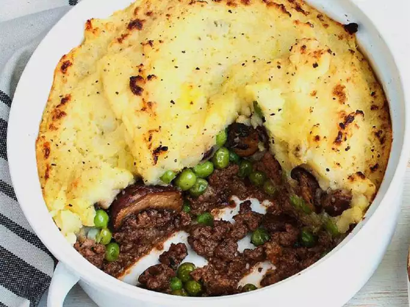

Cottage pie

Description
This is a recipe from my Gram who is English. She served this often, and I have modified her recipe for my family and this is it. A great alternative to Shepherd's Pie.
Ingredients
Directions
- 4 large Yukon Gold potatoes, quartered
- 6 tablespoons butter, divided
- 1 clove garlic, minced
- salt and pepper to taste
- 1 tablespoon olive oil
- 1 pound lean ground beef
- 1 tablespoon herbes de Provence
- 1 ½ cups frozen peas
- Preheat oven to 350 degrees F (175 degrees C). Lightly grease a 9 inch deep-dish pie plate.
- Place potatoes into a pot; cover with salted water, and bring to a boil over high heat. Reduce heat to medium-low, cover; simmer until tender, about 20 minutes. Drain; mash with 2 tablespoons of the butter and the garlic. Season to taste with salt and pepper; set aside.
- Meanwhile, heat the olive oil in a skillet over medium heat. Add ground beef, herbes de Provence, and nutmeg; cook and stir until beef is lightly brown and crumbly, about 10 minutes. Spread the beef evenly in the prepared pie plate. Cover evenly with the peas; spread the mashed potatoes over the peas. Dot the casserole with the remaining butter.
- Bake, uncovered, in the preheated oven until heated through and bubbly, about 20 minutes.